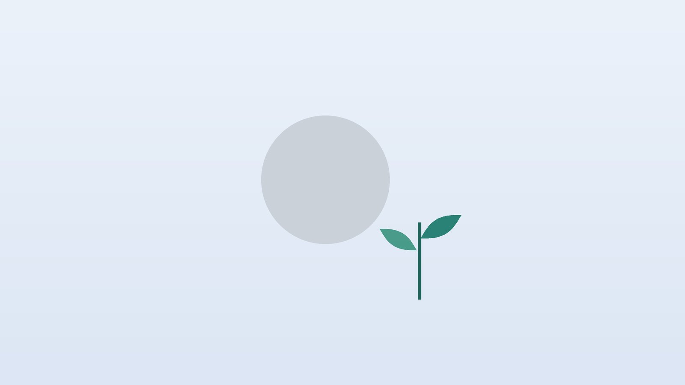

건강 칼럼 · 인천 코로나후유증 한의원
코로나 이후 피로와 기침이 오래간다면, 코로나 후유증 한방 관리

나의 상태, 이런 모습인가요?
- 코로나를 앓은 뒤 몇 달째 예전 체력이 돌아오지 않는다
- 장을 보거나 조금 걸은 다음 날 더 심하게 앓아눕는다
- 말하려던 단어가 생각나지 않고 집중이 안 된다
- 마른기침이나 목 간지러움이 오래 남았다
- 냄새나 맛이 예전과 다르다
- 자고 일어나도 개운하지 않고 밤에 자주 깬다
이 체크리스트는 진단 도구가 아니라 상담이 필요한지 가늠해 보는 참고용입니다.
코로나 후유증은 어떻게 정의하나요?
WHO는 2021년 전문가 합의를 거쳐 코로나 이후 상태(post COVID-19 condition)를 '감염이 확인되었거나 의심되는 사람에게 보통 발병 3개월 무렵부터 나타나 최소 2개월 이상 지속되고, 다른 진단으로 설명되지 않는 증상'으로 정의했습니다. 증상은 처음부터 이어지기도 하고, 회복된 듯하다가 새로 생기기도 하며, 좋아졌다 나빠졌다를 반복하기도 합니다.
특히 주의할 증상은 운동 후 악화(PEM, post-exertional malaise)입니다. 평소라면 괜찮을 활동 뒤 12~48시간 지나 피로와 통증, 머리 멍함이 크게 심해지는 현상으로, 이때 '체력이 떨어졌으니 운동으로 이겨내자'며 강도를 올리면 오히려 회복이 늦어질 수 있습니다. 영국 NICE의 만성피로증후군 지침도 PEM이 있는 분에게 강도를 정해 놓고 늘려 가는 운동 요법을 권하지 않으며, 에너지를 나눠 쓰는 페이싱(pacing)을 기본으로 합니다.
검사가 먼저 필요한 신호
- 가슴 통증이나 가슴 조임이 있다
- 조금만 움직여도 숨이 차거나 숨찬 정도가 점점 심해진다
- 가만히 있어도 심장이 빠르게 뛰거나 일어설 때 어지럽고 쓰러질 듯하다
- 한쪽 다리가 붓고 아프다
- 기침에 피가 섞이거나 열이 다시 난다
심근염, 폐색전증, 폐렴, 기립성 빈맥 같은 질환을 먼저 확인해야 하므로 내과에서 심전도, 흉부 영상, 혈액 검사를 받으세요. 숨이 몹시 차거나 가슴 통증이 심하면 바로 응급실로 가야 합니다.
한의학은 코로나 후유증을 어떻게 보나요?
한의학에서는 큰 열병을 치른 뒤 회복이 덜 된 상태에서 무리해 다시 앓는 것을 노복(勞復)이라 하여 경계했습니다. 『상한론』에도 '큰 병이 나은 뒤 무리하여 다시 도진 경우(大病差後勞復)'를 따로 다룬 편이 있을 만큼, 병이 끝난 뒤의 회복기를 치료의 한 단계로 보았습니다. 조금만 움직여도 다시 앓아눕는 PEM과 겹쳐 보이는 대목입니다.
열병은 몸의 기운(氣)과 진액(陰)을 함께 소모한다고 보았습니다. 그래서 기운이 부족하면 쉽게 지치고 숨이 차며, 진액이 마르면 마른기침과 입 마름, 잠들기 어려움이 남고, 남은 열과 습이 머리를 흐리게 하면 머리가 무겁고 멍해진다고 해석합니다. 치료는 남은 병기운을 정리하면서 비워진 것을 천천히 채우는 데 둡니다.
나의 후유증은 어떤 유형일까?
1. 기음양허(氣陰兩虛) 기운과 진액이 모두 마른 유형
- 이런 분에게 많아요
- 피로와 마른기침이 함께 남은 분
- 나타나는 모습
- 쉽게 지치고 숨이 차며 목이 마른다
- 함께 오는 몸의 신호
- 식은땀, 입 마름, 가슴 답답함
- 진찰에서 보이는 모습
- 혀가 붉고 설태가 적으며 맥이 가늘고 약함
- 치료 방향
- 기운과 진액을 함께 채우는 방향 (생맥산·맥문동탕 계열)
- 오늘부터 해 볼 것
- 한 번에 많이 말고 미지근한 물을 한두 모금씩 자주 마셔 보세요.
2. 폐비기허(肺脾氣虛) 기운이 바닥난 유형
- 이런 분에게 많아요
- 입맛이 없고 체력이 크게 떨어진 분
- 나타나는 모습
- 조금만 움직여도 누워야 하고 PEM이 뚜렷하다
- 함께 오는 몸의 신호
- 식욕 저하, 묽은 변, 감기에 잘 걸림
- 진찰에서 보이는 모습
- 혀가 옅고 가장자리에 잇자국이 있으며 맥에 힘이 없음
- 치료 방향
- 폐와 비위를 도와 기운을 북돋는 방향 (보중익기탕·삼령백출산 계열)
- 오늘부터 해 볼 것
- 하루 활동을 평소의 절반으로 나눠 보세요.
3. 심비양허(心脾兩虛) 머리가 멍하고 잠이 얕은 유형
- 이런 분에게 많아요
- 브레인포그와 불면이 두드러진 분
- 나타나는 모습
- 집중이 안 되고 깜빡하며 잠이 얕다
- 함께 오는 몸의 신호
- 두근거림, 불안, 꿈이 많음
- 진찰에서 보이는 모습
- 혀 색이 옅고 맥이 가늘며 힘이 없음
- 치료 방향
- 심과 비를 보해 정신을 안정시키는 방향 (귀비탕 계열)
- 오늘부터 해 볼 것
- 커피와 녹차는 점심 이후로 미뤄 두지 말고 오전에만 드세요.
4. 여열미청(餘熱未淸) 열과 기침이 남은 유형
- 이런 분에게 많아요
- 가래 섞인 기침과 미열감이 남은 분
- 나타나는 모습
- 목이 간지럽고 기침이 밤에 심해진다
- 함께 오는 몸의 신호
- 입이 쓰고 가슴이 답답함
- 진찰에서 보이는 모습
- 혀가 붉고 설태가 누렇고 얇음
- 치료 방향
- 남은 열을 맑히고 폐를 촉촉하게 하는 방향 (죽엽석고탕 계열)
- 오늘부터 해 볼 것
- 잠자리 습도를 50% 안팎으로 맞추세요.
한의원에서는 어떻게 진찰하나요?
- 검사 확인: 내과에서 받은 혈액 검사, 흉부 영상, 심전도 결과로 다른 원인이 배제됐는지 확인합니다.
- 에너지 일지: 하루 활동량과 PEM이 오는 시점, 수면 시간을 함께 살펴봅니다.
- 주된 증상: 피로, 기침, 브레인포그, 후각, 두근거림 중 무엇이 가장 불편한지 순서를 정합니다.
- 설진·맥진: 기운과 진액의 부족, 남은 열의 비중을 판단합니다.
침·약침·한약 치료는 어떻게 하나요?
1. 침 치료
- 족삼리(足三里): 정강이뼈 바깥, 무릎뼈 아래 오목한 곳에서 손가락 네 개 너비 아래. 소화와 체력을 돕습니다.
- 내관(內關): 손바닥 쪽 손목 주름 가운데에서 팔꿈치 방향으로 손가락 세 개 너비, 힘줄 두 가닥 사이. 두근거림과 가슴 답답함에 씁니다.
- 폐수(肺兪): 셋째 등뼈 아래에서 양옆으로 손가락 두 마디. 기침에 씁니다.
- 백회(百會): 양 귀 끝을 이은 선과 머리 한가운데 선이 만나는 정수리.
- 태연(太淵): 손목 안쪽 주름의 엄지 쪽 맥이 뛰는 자리.
PEM이 있는 분은 치료 자체가 부담이 되지 않도록 자극을 약하게, 시간을 짧게 시작합니다. 코로나 후유증에 대한 한방 치료 연구는 아직 진행 중이어서, 피로 점수와 일지로 변화를 확인합니다.
2. 약침과 온열 요법
등과 목 주변의 관련 경혈에 약침을 적용하고, 몸이 차고 기운이 없는 분은 온열 요법을 함께 받을 수 있습니다.
3. 한약
유형에 맞춘 탕약으로 기운과 진액을 채우고 기침과 수면을 돌봅니다. 혈압약, 당뇨약, 갑상선약을 드시는 분은 한약을 드시는 동안에도 임의로 끊지 마시고, 복용 중인 약을 알려 주시면 확인해 처방합니다.
원장님이 네이버 블로그에 진료 이야기와 건강 정보를 꾸준히 올리고 있습니다. 더 많은 이야기는 블로그에서 확인해 보세요.
블로그 보기치료는 어떤 순서로 진행되나요?
- 내과 확인 가슴 통증, 숨참, 두근거림이 있으면 검사부터 받습니다.
- 첫 한방 진료 유형과 가장 불편한 증상을 정하고 에너지 일지를 시작합니다.
- 4~8주 주 1~2회 침 치료와 탕약으로 피로, 기침, 수면을 함께 다룹니다.
- 회복기 PEM이 줄면 활동을 아주 조금씩 늘리고 치료 간격을 넓힙니다.
코로나 후유증은 좋아졌다 나빠졌다를 반복하는 경과가 흔해, 한 주 단위보다 한 달 단위의 흐름으로 경과를 봅니다.
회복을 돕는 페이싱과 생활 관리
- 에너지 나눠 쓰기: 할 일을 작게 쪼개고, 지치기 전에 쉬는 시간을 미리 넣습니다.
- PEM 기록: 무리한 날과 다음 날 상태를 적어 내 한계를 파악합니다.
- 머리 쉬게 하기: 브레인포그가 심할 때는 메모와 알람을 쓰고 한 번에 한 가지 일만 합니다.
- 수면: 같은 시간에 자고 일어나며 낮잠은 30분 안으로 짧게 합니다.
- 호흡: 하루 몇 번, 코로 4초 들이쉬고 6초 내쉬는 느린 호흡을 해 봅니다.
다른 진료가 함께 필요한 경우
- 숨참과 기침이 계속되면 호흡기내과에서 폐 기능 검사를 받아 보세요.
- 일어설 때 어지럽고 맥이 빨라지면 기립성 빈맥 검사가 필요합니다.
- 우울감이나 불안이 깊어졌다면 정신건강의학과 상담을 함께 받으세요.
- 후각 이상이 오래가면 이비인후과 후각 검사를 받아 보세요.
자주 묻는 질문 Q&A
- Q1. 코로나에 걸린 지 1년이 넘었는데도 해당되나요?
- 증상이 이어지고 다른 원인이 없다면 후유증으로 보고 관리할 수 있습니다.
- Q2. 체력을 기르려고 운동을 늘려도 되나요?
- PEM이 있다면 무리한 운동은 회복을 늦출 수 있습니다. 다음 날 컨디션을 보며 아주 천천히 늘리세요.
- Q3. 브레인포그도 좋아지나요?
- 시간이 지나며 나아지는 분이 많습니다. 수면과 휴식을 먼저 챙기세요.
- Q4. 기침이 석 달째예요.
- 흉부 영상으로 폐렴 등 다른 원인을 먼저 확인한 뒤 함께 관리합니다.
- Q5. 검사에서는 이상이 없다는데 아파요.
- 검사가 정상이어도 증상은 실제로 있을 수 있습니다. 증상 중심으로 관리합니다.
- Q6. 침을 맞으면 더 피곤하지 않나요?
- PEM이 있는 분은 약한 자극으로 짧게 시작합니다.
- Q7. 한약은 얼마나 먹나요?
- 보통 4~8주 단위로 경과를 보고 조정합니다.
- Q8. 다시 코로나에 걸리면 더 심해지나요?
- 재감염 뒤 증상이 다시 나빠지는 분도 있어 예방 수칙과 회복기 관리가 중요합니다.
문원열 대표원장한의사 · 365스마일한의원
인천 서구 가정동 한자리에서 10년 넘게 진료하며, 환자 한 분 한 분의 아픔을 깊이 들여다보고 근본적인 원인을 찾는 진료를 지향합니다.
원장 소개 보기 →진료 안내
- 진료시간
- 평일 09:00~20:00 (점심시간 13:00~14:00)
토·일·공휴일 09:00~15:00 - 주소
- 인천광역시 서구 가경주로 46, 2층 (가정동)
인천2호선 가정중앙시장역 인근
영상으로 길 안내 보기 → - 주차
- 한의원 건물 바로 앞 1층 도원주차장
- 예약
- 네이버 예약 바로가기 또는 전화 예약
진료시간은 사정에 따라 바뀔 수 있으니 방문 전 전화로 확인해 주세요.
함께 읽으면 좋은 칼럼
건강 칼럼 전체 보기 →


참고 자료
- World Health Organization. A clinical case definition of post COVID-19 condition by a Delphi consensus, 6 October 2021
- National Institute for Health and Care Excellence (NICE). Myalgic encephalomyelitis (or encephalopathy)/chronic fatigue syndrome: diagnosis and management (NG206), 2021
- 『상한론(傷寒論)』 변음양역차후노복병맥증병치(辨陰陽易差後勞復病脈證幷治)
- 질병관리청 국가건강정보포털 — 원문
※ 이 글은 일반적인 건강 정보이며, 개인의 상태에 따라 치료 방법과 결과는 다를 수 있습니다. 정확한 진단과 치료는 진료를 통해 결정됩니다. 침·약침 시술 후 드물게 멍, 통증 등이 생길 수 있습니다.